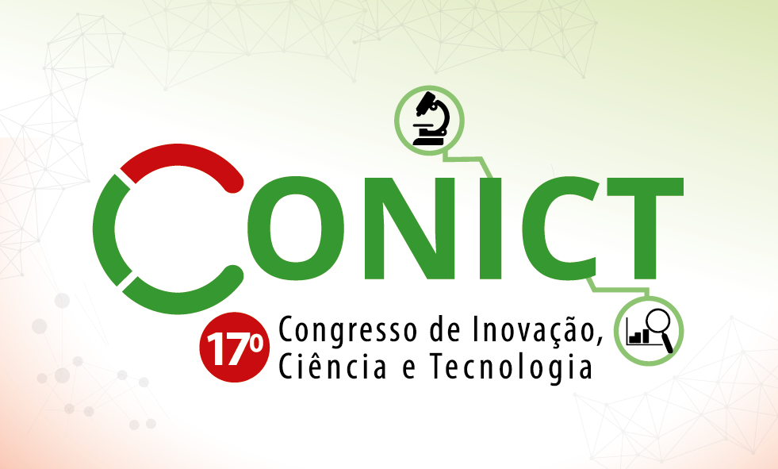

Um dos maiores eventos científicos da Rede Federal, promovendo pesquisa, inovação e integração entre ensino, extensão e tecnologia.
Submeter Trabalho
O Conict é um evento anual, científico e tecnológico, de natureza multidisciplinar, que integra as principais áreas de conhecimento, contando com a participação da comunidade interna e externa do IFSP.
Promove a difusão da produção científica e tecnológica por meio de apresentações orais e/ou pôsteres de trabalhos, cujos respectivos resumos expandidos são publicados em seus anais. O evento é aberto à participação de estudantes do ensino médio, técnico ou superior que desenvolvam pesquisa no IFSP ou em outras instituições de ensino e/ou pesquisa do país.
Além disso, o evento tem como objetivo divulgar à comunidade os resultados das pesquisas desenvolvidas, aproximando os pesquisadores dos setores produtivos.
Ao longo de suas 16 edições, o evento vem apresentando um crescimento considerável do número de participantes e, consequentemente, do número de trabalhos apresentados. O Conict, nesses 16 anos, soma mais de 5.500 trabalhos apresentados, além de diversas palestras e minicursos ministrados.
Neste ano, o 17º Congresso de Inovação, Ciência e Tecnologia do IFSP acontecerá de 24/11/2026 a 26/11/2026 no IFSP Campus Guarulhos.
A submissão dos trabalhos é feita em duas etapas bem simples:
Primeiro você se registra no site. Depois você submete o seu trabalho!
As submissões devem ser feitas utilizando o Modelo de submissão (Word e Latex) no formato de resumo expandido (até 6 páginas, sem identificação).
Na etapa de avaliação, o PDF não deve conter o nome dos autores.
Os trabalhos devem ser submetidos exclusivamente em PDF através do site de submissão.
É necessário realizar cadastro como autor e inserir no sistema todos os autores do trabalho. Acesse o tutorial para cadastro e submissão.
Se o trabalho recebeu algum apoio financeiro, seja ele do CNPq, da Fapesp, ou do próprio IFSP, é necessário agradecer pelo fomento.
Não submeta o trabalho sem uma última análise do orientador!
Não perca o prazo! A submissão é feita exclusivamente pela plataforma oficial do evento. Clique no botão abaixo para acessar.
Verifique todos os dados dos autores durante a submissão para garantir a correção dos certificados e publicações.
A programação será divulgada posteriormente! Mas contará com:
João Alves Pacheco - Presidente
Pedro Fonseca Ravagnani Disperati - Infraestrutura TI
Robson Ferreira Lopes - Sistema de submissão e programação do evento
Valdir Marques de Souza - Secretaria
Eduardo Dantas Leite - Contratação de serviços
Sergio Andrade Silva Leal - Comunicação, divulgação e logística
Andrea Souza Eduardo - Acessibilidade
Tadeu Silva Santos - Equipe de monitores
Rogerio Marques Ribeiro - Diretor Científico
Ana Paula Ximenes Flores - Diretora da Área de Ciências Exatas e da Terra
Aline Binato Neufeld - Diretora da Área de Ciências Biológicas
Wilson Carlos da Silva Junior - Diretor da Área de Engenharias
Jordy Luiz Cerminaro Spacca - Vice-diretor da Área de Engenharias
Leonardo Silvestre Neman - Diretor da Área de Ciências da Saúde
Aline Binato Neufeld - Diretora da Área de Ciências Agrárias
Rafael Magno Alves - Diretor da Área de Ciências Humanas
Elizabete Rubliauskas Giachetti - Diretora da Área de Linguística, Letras e Artes
Sivanilza Teixeira Machado - Diretora da Área de Ciências Sociais Aplicadas
Carlos Otávio Schocair Mendes - Diretor da Área Multidisciplinar
Adalton Masalu Ozaki - Pró-reitor de Pesquisa e Pós-graduação
Thiago Pedro Donadon Homem - Diretor de Pesquisa
Erica Mayumi Shimada - Diretora Adjunta de Fomento à Pesquisa
Thiago Vieira da Silva - Técnico de TI
Email: conict@ifsp.edu.br
Instituto Federal de São Paulo - Campus Guarulhos
Av. Salgado Filho, 3501 - Centro, Guarulhos - SP, 07115-000